Você escreve a pauta. A IA confere os fatos e escreve o roteiro. O vídeo 9:16 sai pronto pra Reels, TikTok e Shorts: narração, imagens, animação, trilha e legenda, tudo feito no seu computador.
Esses são os vídeos do debate que o Felipe (FGF0T) fez com esse fluxo. A skill empacota o jeito de fazer cada um deles. Eles estão no Drive, prontos pra baixar e postar.
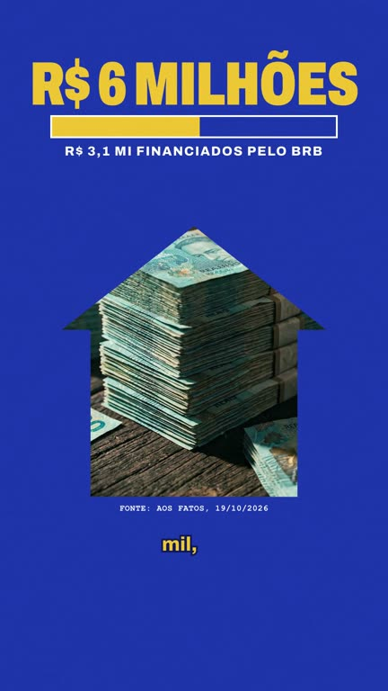
2 · A mansãoR$ 6 milhões, R$ 3,1 mi do BRB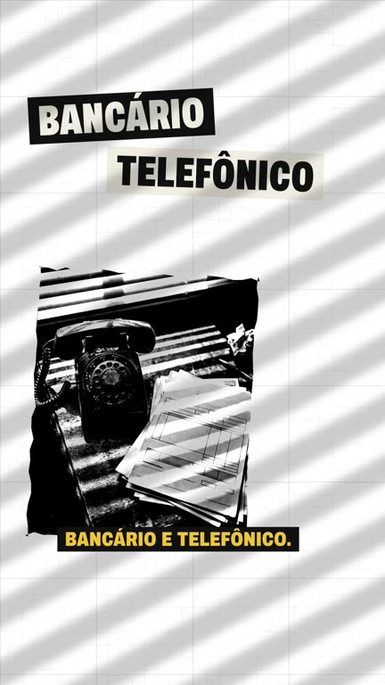
3 · Quem não deveColagem punk P&B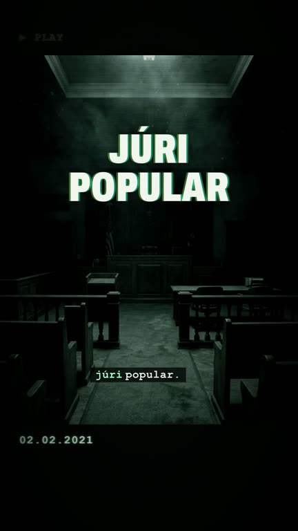
5 · Caso Ana ClaraTerror VHS, o PM acusado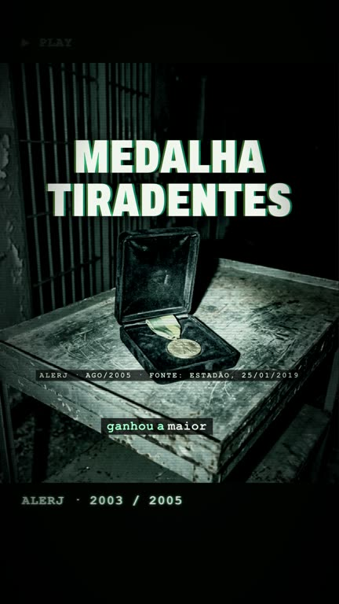
7 · A medalhaAlerj, 2005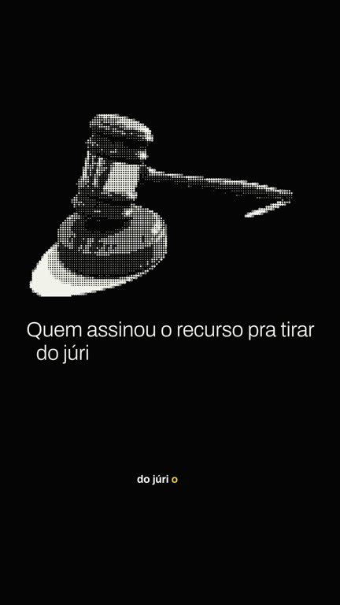
8 · Não acredita? Pesquisa.Perguntas e respostasNos vídeos 1 a 7 algumas cenas foram geradas no Google Flow. A skill faz tudo de graça, sem Flow: imagens de um acervo de fotos livres, desenhos feitos em código e manchetes reais.
Quadros de vídeos feitos pela própria skill, nos testes. Você escolhe o estilo no pedido, ou deixa a IA escolher pela pauta.
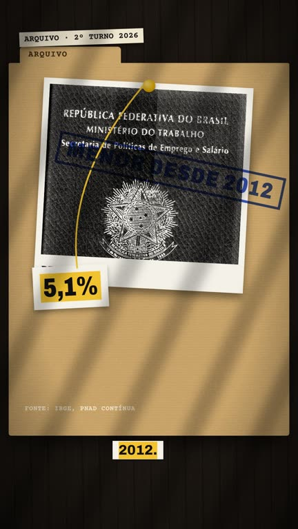
DossiêDenúncia, contradição. Pasta de arquivo, polaroide, barbante, carimbo.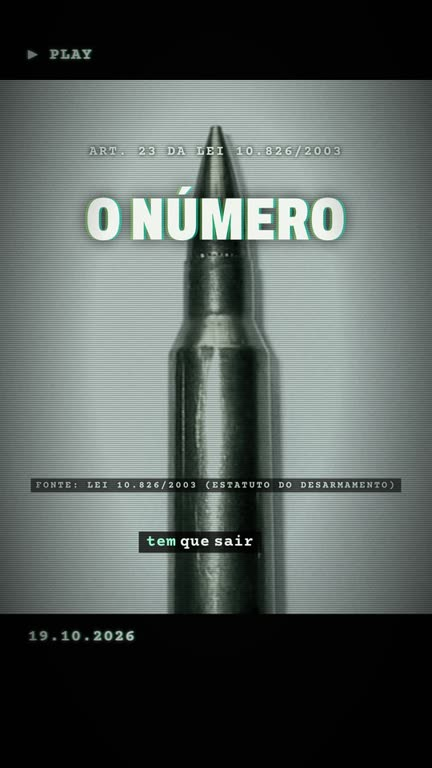
VHSCaso grave, tom sério. Fita achada, chiado, texto que grita.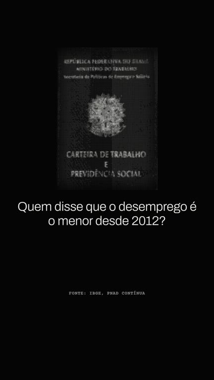
PesquisePerguntas e respostas. Fundo preto, foto em retícula.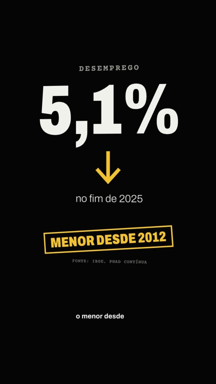
Dados2 a 4 números oficiais. Número gigante, seta, selo.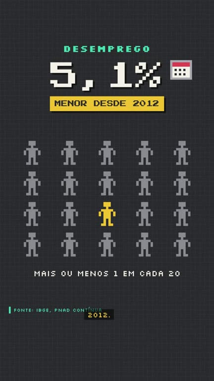
PixelExplicar passo a passo. Pixel art, ícones, sons 8-bit.Peça "faz um vídeo" sem dizer o assunto e a IA mostra a lista. Cada pauta tem o roteiro pronto e um arquivo com os fatos, as fontes e a versão do outro lado. Checadas em 19 e 20/10/2026: confira antes de postar.
Precisa do Claude Code (o plano básico serve) ou do Codex, instalados no computador. No chat do site do Claude não funciona: lá a IA não roda o motor de vídeo.
Abra o Claude Code (ou o Codex) no seu computador, em qualquer pasta.
Cole o pedido abaixo, com o link desta página. A IA lê as instruções daqui, baixa a skill e roda o instalador.
Leva de 5 a 20 minutos e baixa uns 2 GB. Se pedir a senha do computador, digite no Terminal. No fim, feche e abra o Claude Code.
Instala pra mim a skill motion-eleicao seguindo esta página: https://fgf0t.github.io/motion-eleicao/Exemplo do que aparece no fim. Prefere fazer na mão? Baixe a skill em github.com/fgf0t/motion-eleicao (botão Code > Download ZIP) e descompacte. No Mac, digite bash no Terminal e arraste o instalar.sh; no Windows, clique com o botão direito no instalar.ps1 e escolha "Executar com o PowerShell".
faz um vídeoSem pauta: a IA mostra as 14 pautas prontas e os estilos, e você escolhe.
faz um vídeo sobre a queda do desemprego no estilo dadosCom pauta e estilo. Se você já tiver as fontes, mande junto.
quais estilos tem?quero usar a minha vozLeva de 2 a 5 minutos. Saem dois arquivos: o vídeo 1080x1920 e um texto com as fontes e os créditos pra colar na legenda do post.
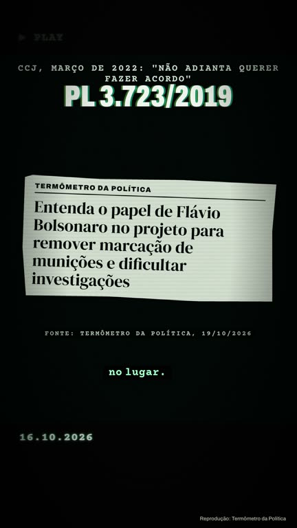
A IA lê do link da matéria só o título, o veículo e a data, e desenha um recorte de jornal em código. A foto da matéria nunca entra, porque é do fotógrafo. Embaixo aparece "Reprodução: veículo". Manchete que acusa sem condenação é recusada.
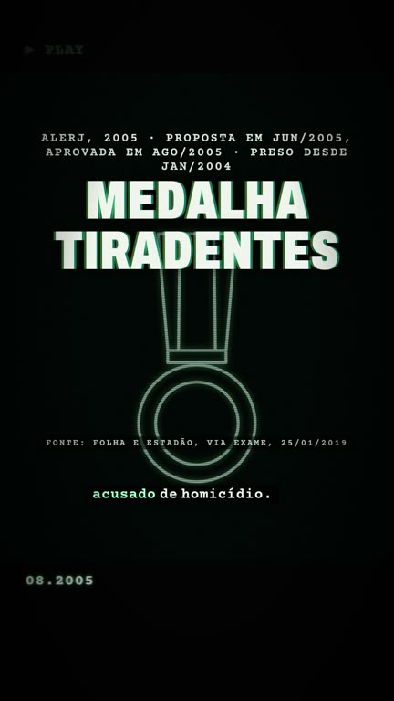
Quando a cena não tem imagem, o VHS desenha o objeto em traço de luz: corredor, porta, mesa, envelope, cadeado, medalha, urna e mais. Neutro, sem rosto, placa ou texto de ninguém.
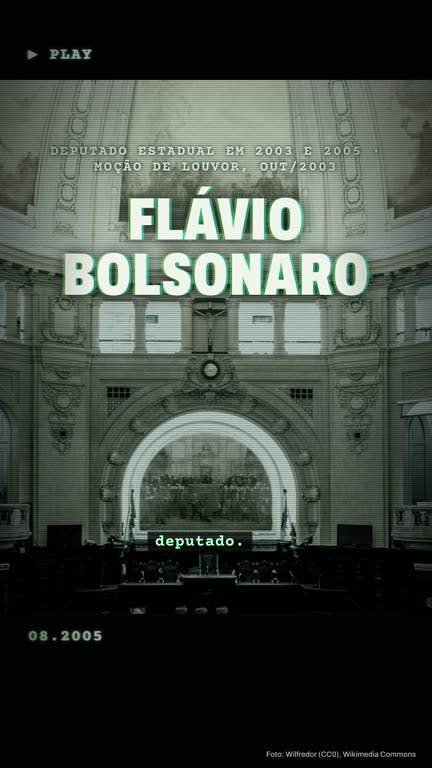
7 fotos livres do Wikimedia Commons, já recortadas e conferidas quadro a quadro. O crédito aparece embaixo durante a cena e de novo no fim do vídeo.
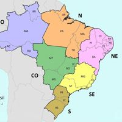
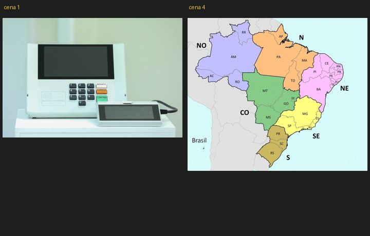
Antes do render, a skill monta uma folha com a foto de cada cena. A IA olha e corta ou tira o que tiver placa, texto, rosto ou lugar de outro país.
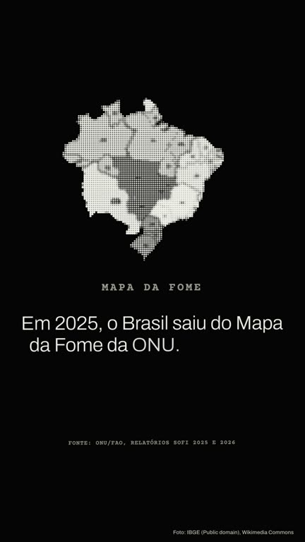
Número, carimbo e citação só entram com fonte, e a fonte aparece na tela. Se faltar, a skill recusa o roteiro antes de gastar tempo.
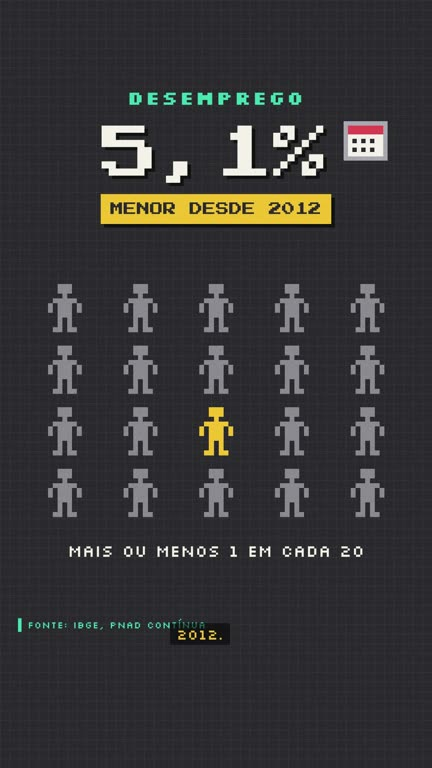
Depois de montar, a skill ouve cada fala de novo e confere a primeira e a última palavra. Se algo sair cortado, ela refaz sozinha. Se não der, ela para e avisa, sem renderizar.
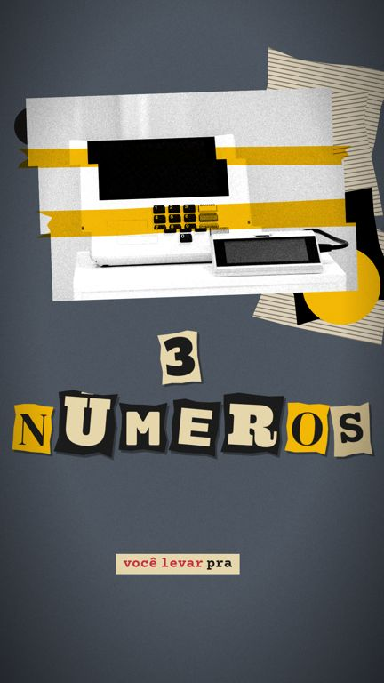
Mande uma referência (imagem, print, link do Pinterest, Instagram ou YouTube) e peça "cria um estilo assim". A IA analisa as cores, a letra e o movimento, monta o estilo, renderiza um teste curto e só põe no cardápio depois que você aprovar. Este é um teste feito a partir de uma colagem de papel rasgado.
cria um estilo novo chamado colagem a partir desta referênciaSem você fazer nada, a narração sai com uma voz grátis: o Narrador Grave, se você tiver o VoiceStudio; a voz neural Kokoro, se não tiver; e, por último, a voz do computador. Mas a sua própria voz soa mais natural e passa mais confiança pra quem assiste.
Grátis e no seu computador. Ocupa uns 5 GB. A IA te passa o comando certo pro seu sistema.
A IA te dá um texto. Leia no celular, num lugar silencioso, com o celular a um palmo da boca.
Qualquer formato (m4a, mp3, ogg do WhatsApp). A IA cria a voz e registra o seu consentimento.
A IA gera uma frase de teste. Gostou? Ela salva e os próximos vídeos saem com a sua voz.
Ou a de alguém que autorizou por escrito. Clonar voz de candidato ou de qualquer outra pessoa é proibido e, em propaganda eleitoral, pode ser crime.
Veículo ou órgão e data. Confira cada número com a fonte antes de postar.
A skill recusa "ladrão", "bandido", "corrupto", "miliciano". Diga o fato: denunciado, investigado, réu.
A tela final já avisa que a voz é sintética. Ao postar, marque "conteúdo feito com IA" na plataforma.
Eleitor não pode pagar pra promover conteúdo eleitoral. Poste de forma orgânica.
Nada de criar ou alterar imagem, vídeo ou voz de pessoa real. A skill não gera rosto nem voz de ninguém.
Nada de rosto, placa, texto ou lugar de outro país. Só objeto neutro ou o próprio lugar da pauta.
É isto que a IA lê quando você manda o link desta página. Se ela ficar perdida, copie e cole no chat.
Feche e abra o Claude Code de novo. Se continuar, mande o link desta página pra IA de novo.
A skill não conseguiu deixar a fala inteira. Peça pra IA reescrever a fala dessa cena com uma frase mais simples, ou troque a voz.
Peça "tira a foto da cena 2" ou "usa o cadeado do acervo". No estilo VHS, cena sem foto ganha um desenho em código.
O instalador de Windows existe, mas foi testado de verdade só no Mac. Se der erro, mande a mensagem de erro pra IA.